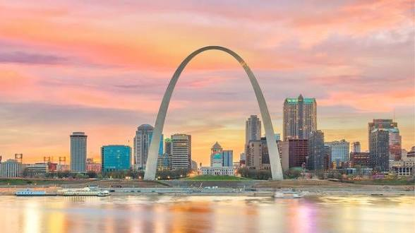
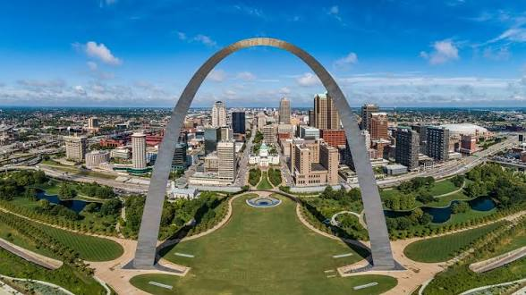
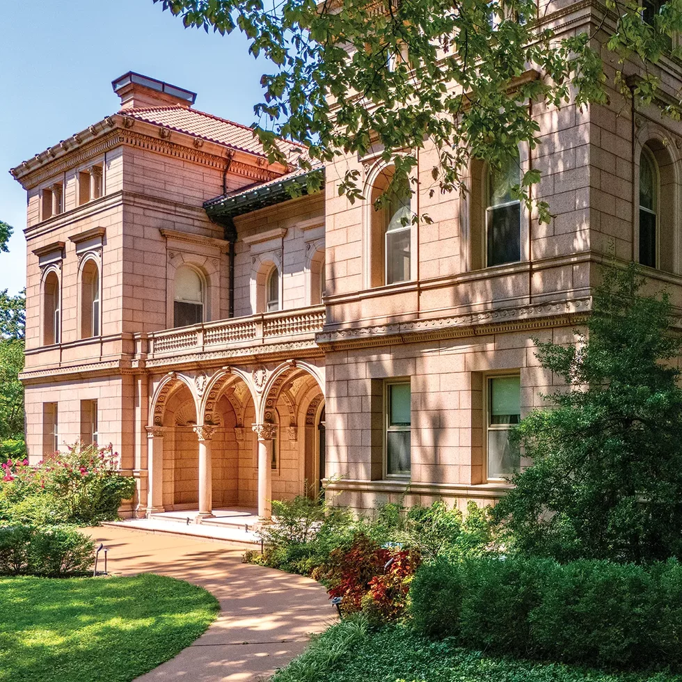
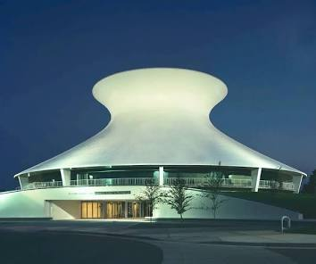
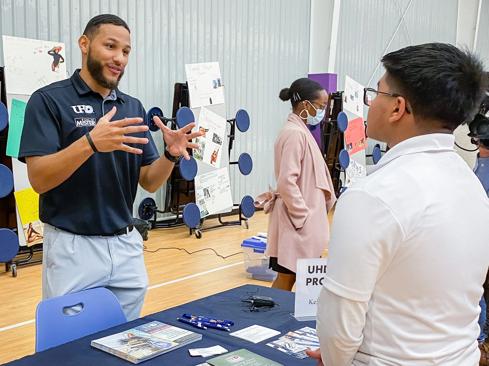

For generations, concrete has shaped the landmarks, institutions, neighborhoods and opportunities that define St. Louis. Phillips Concrete continues that legacy through quality craftsmanship, community investment and construction excellence.

The Gateway Arch stands as one of America's most recognizable landmarks. Its massive reinforced concrete foundations demonstrate the strength, precision and durability that make monumental construction possible.

The St. Louis skyline is built upon generations of concrete innovation. Every roadway, bridge, tower and public space relies on durable construction practices that support growth across the region.

Historic concrete and masonry structures throughout St. Louis continue to showcase craftsmanship, durability and architectural excellence. These structures prove the lasting value of quality construction.

The iconic planetarium showcases innovative thin-shell concrete engineering that pushed architectural boundaries and continues to inspire modern construction today.

Phillips Concrete believes construction is about more than structures. Through workforce development, mentorship, partnerships and community engagement, we help create pathways to opportunity throughout St. Louis.
Reliable. Safe. Experienced. Community Focused.
Owner: Alfredo Jones
Business Development Representative: Michael Freeny
📞 314-918-2900